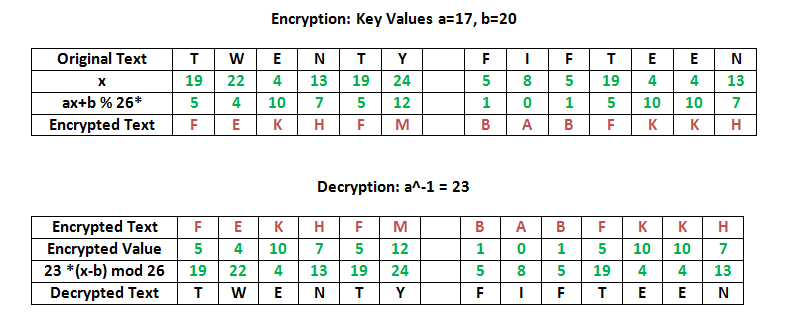

Affine Cipher in Go

Introduction
As part of the Exercism Go track I’ve written an implementation of
the Affine cipher.
The installation and usage instructions can be found at my GitHub profile here.
Here is an example encrypt and decrypt. Note that the ciphertext is split in chunks of 5 for harder cryptanalysis:
[affinecipher]$ go run main.go -a 3 -b 5 -s "Hello world" -e
armmv tvemo
[affinecipher]$ go run main.go -a 3 -b 5 -s "armmv tvemo" -d
helloworld
Theory
Encryption
The encryption function is:
E(x) = (ai + b) mod m
Where:
iis the letter’s index from0to the length of the alphabet - 1.mis the length of the alphabet. For the Latin alphabetmis26.aandbare integers which make up the encryption key.
Values a and m must be coprime (or, relatively prime) for
automatic decryption to succeed, i.e., they have number 1 as their
only common factor (more information can be found in the Wikipedia
article about coprime integers).
Ciphertext is written out in groups of fixed length separated by
space, the traditional group size being 5 letters. This is to make
it harder to guess encrypted text based on word boundaries.
For mapping letters to value we use a map with its key a Go rune and
its value an int:
// Mapping of letters to values.
var letterMap = map[rune]int {
'a': 0,
'A': 0,
'b': 1,
'B': 1,
'c': 2,
'C': 2,
// and so on...
}
The encode function does the following steps:
- Checks if key
ais coprime withm - Trims whitespace using
strings.ReplaceAll - Trims punctuation using the
\p{P}Unicode Regexp character class andReplaceAll - For each character using
range, applies the formulaE(x) = (ai + b) mod m
// Encode a string using the Affine cipher.
func Encode(text string, a, b int) (string, error) {
if !IsCoprime(a, 26) {
return "", ErrNotCoprime
}
var cipherText strings.Builder
text = strings.ReplaceAll(text," ", "") // trim whitespace
// trim punctuation
pattern := "[\\p{P}]"
re := regexp.MustCompile(pattern)
text = re.ReplaceAllString(text, "")
for _, char := range text {
_, isNotDigit := strconv.Atoi(string(char))
if isNotDigit != nil { //if letter
encValue := (a * letterMap[char] + b) % 26
cipherText.WriteString(string(codeMap[encValue]))
} else if isNotDigit == nil { // is digit, just append
cipherText.WriteString(string(char))
}
}
return SplitStringIntoFivedChunks(cipherText.String()), nil
}
Decryption
The decryption function is:
D(y) = (a^-1)(y - b) mod m
Where:
yis the numeric value of an encrypted letter, i.e.,y = E(x)- it is important to note that
a^-1is the modular multiplicative inverse (MMI) ofa mod m - the modular multiplicative inverse only exists if
aandmare coprime.
The MMI of a is x such that the remainder after dividing ax by m is 1:
ax mod m = 1
More information regarding how to find a Modular Multiplicative Inverse and what it means can be found in the related Wikipedia article.
The decode function:
- Applies the decryption function using an opposite
code-to-lettermap:
var codeMap = map[int]rune {
0: 'a',
1: 'b',
2: 'c',
// and so on...
}
// Decode a string using the Affine cipher.
func Decode(text string, a, b int) (string, error) {
var plainText strings.Builder
if!IsCoprime(a, 26) {
return "", errors.New("A and 26 are not coprime.")
}
text = strings.ReplaceAll(text," ", "") // trim whitespace
for _, char := range text {
// D(y) = (a^-1)(y - b) mod m
if unicode.IsDigit(char) {
plainText.WriteString(string(char))
} else {
encryptedLetterValue := letterMap[char] // y
// a^-1 = FindMMIOfA(a)
decValue := Mod26((FindMMIOfA(a) * (encryptedLetterValue - b)))
plainText.WriteString(string(codeMap[decValue]))
}
}
return plainText.String(), nil
}
Example of finding a Modular Multiplicative Inverse (MMI)
Finding MMI for a = 15:
(15 * x) mod 26 = 1(15 * 7) mod 26 = 1, ie.105 mod 26 = 17is the MMI of15 mod 26
Implemented in code:
func FindMMIOfA(a int) int {
i := 0
for {
if (a*i)%26 == 1 {
return i
} else {
i++
}
}
}
Conclusion
Writing the Affine Cipher implementation in Go was a breeze, and I hope this post encourages more people to use Go for solving problems.